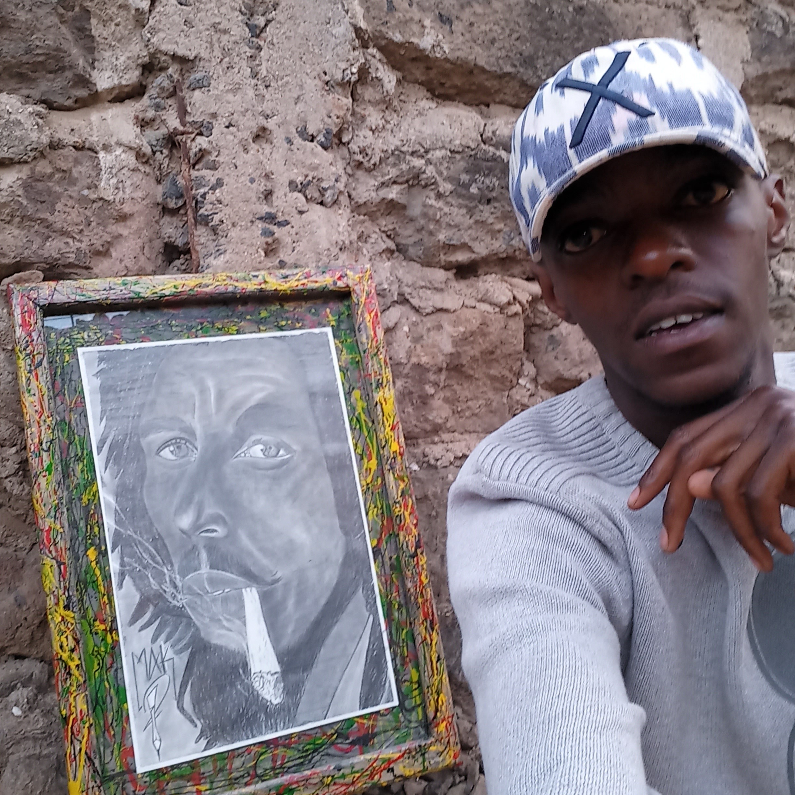

A private exploration of emotion through paint, form, and detail.

My work begins where words fail.
Each piece is born from a moment—raw, unfiltered, and deeply personal.
Whether on canvas, bead, or structure, I translate emotion into form.
From fine art to custom-painted cars and architectural surfaces, every creation is designed not just to be seen, but to be experienced.
Art is not created for attention. It is created for resonance.
Every detail is intentional. Every stroke carries weight.
I don’t create for viewing. I create for feeling.
Each piece begins with observation. Then emotion. Then form. Whether working on canvas, metal, or structure, the process remains the same—translate feeling into reality.
THE SOUL
EXHIBITIONS
COLLECTORS
CUSTOM PROJECTS